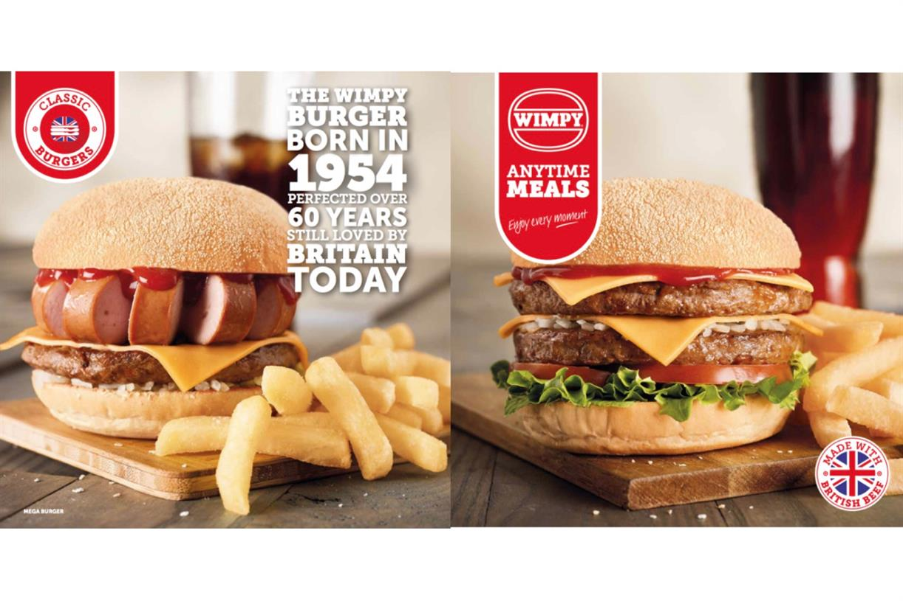

Wimpy is the brand name of a multinational chain of former fast food restaurants that has been gradually upgrading units to become casual dining style diners with table service since a change of ownership that occurred in 2007. The brand is headquartered in Johannesburg, South Africa. The chain began in 1934 in the United States and was based in Chicago. The brand was introduced to the United Kingdom in 1954 as "Wimpy Bar". Wimpy grew to approximately 1,500 locations in several countries before narrowing to a few hundred locations in two countries. Wimpy's worldwide headquarters was located in the United States and the United Kingdom before relocating to South Africa. Wimpy's menu consists primarily of grilled dishes, hamburgers, chips (fries), breakfast items and beverages.
 Back
Back